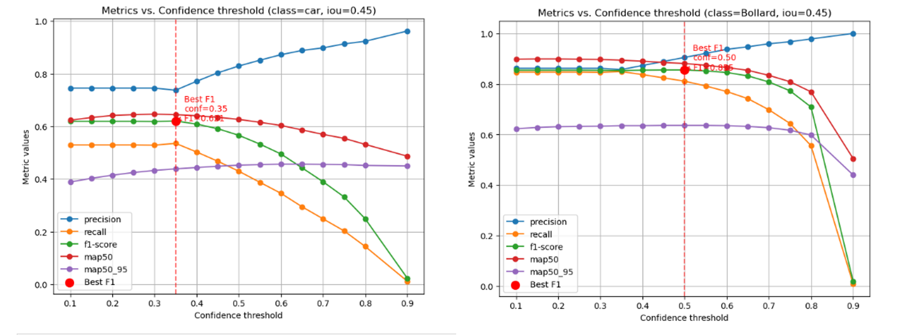
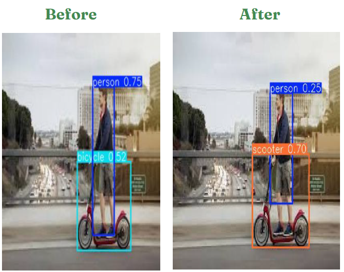

YOLOv5s: Obstacle Detection Model
We selected and fine-tuned YOLOv5s as our base for object detection due to its lightweight structure and fast inference speed
Model Comparison & Final Performance
| Model | Precision | Recall | mAP 0.5 | mAP 0.5-0.9 |
|---|---|---|---|---|
| Yolo v5s | 0.65 | 0.48 | 0.52 | 0.31 |
| Yolo v7s | 0.63 | 0.33 | 0.37 | 0.20 |
| Yolo v11s | 0.66 | 0.53 | 0.56 | 0.37 |
Deployment: Optimized using TorchScript for Android compatibility
- mAP 0.5: Mean Average Precision calculated using a single Intersection over Union (IoU) threshold of 0.5.
- mAP 0.5–0.9: Mean Average Precision averaged over multiple IoU thresholds, ranging from 0.5 to 0.95 in increments of 0.05.
Fine-Tuning Strategy
- Changed optimizer from SGD to Adam
- Lowered learning rate from 0.01 to 0.001 for better convergence
- Increased training epochs to 100
- Implemented Class Weight Parameter
- Addressed class imbalance with undersampling and augmented oversampling
- Implemented label smoothing with value 0.1 to avoid over confident of the model
- Applied relative threshold by class by best F1 score

Example of applying different threshold by class (Car, Bollard)
Final Result
After fine-tuning, the model showed improvements across all key performance metrics:
| Model | Precision | Recall | F1 Score | mAP 0.5 | mAP 0.5–0.95 |
|---|---|---|---|---|---|
| Basemodel | 0.65 | 0.48 | 0.54 | 0.52 | 0.31 |
| Fine-Tuned model | 0.82 | 0.67 | 0.73 | 0.76 | 0.54 |
Frecision-Recall curve moved to the top-right corner showing the improvement after fine-tuning

New Class Detected After fine-tuning
